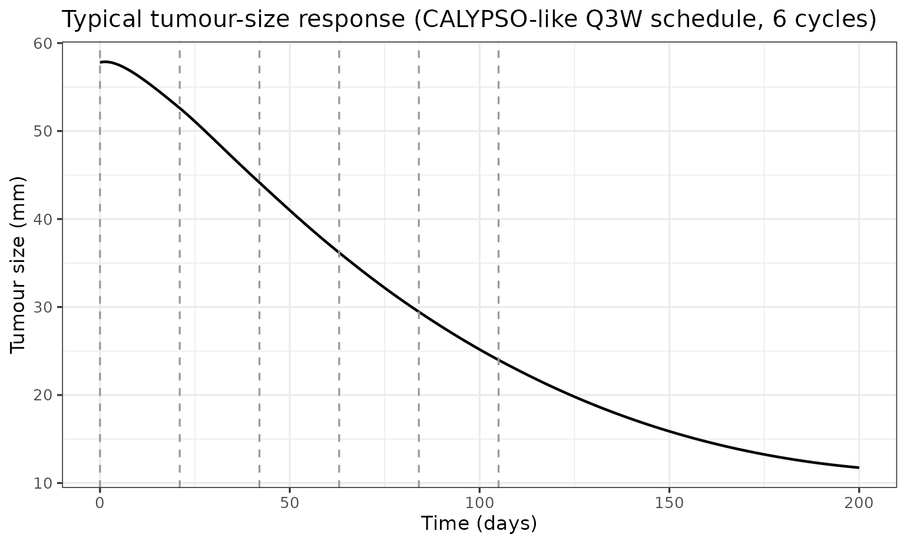
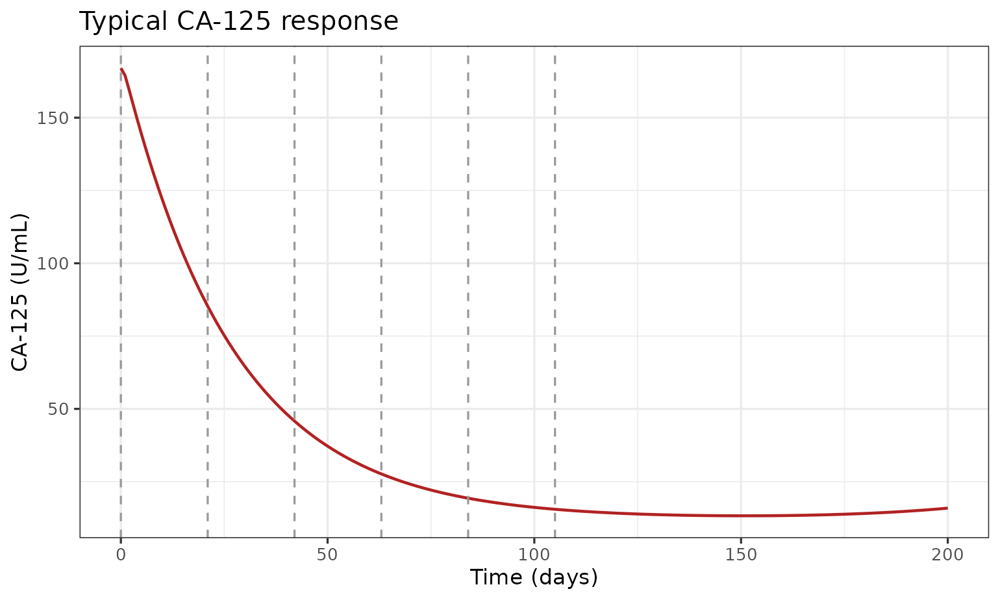
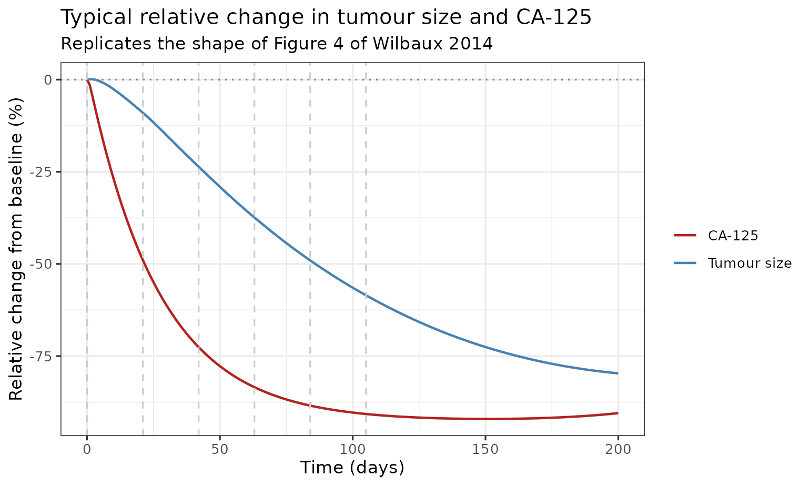
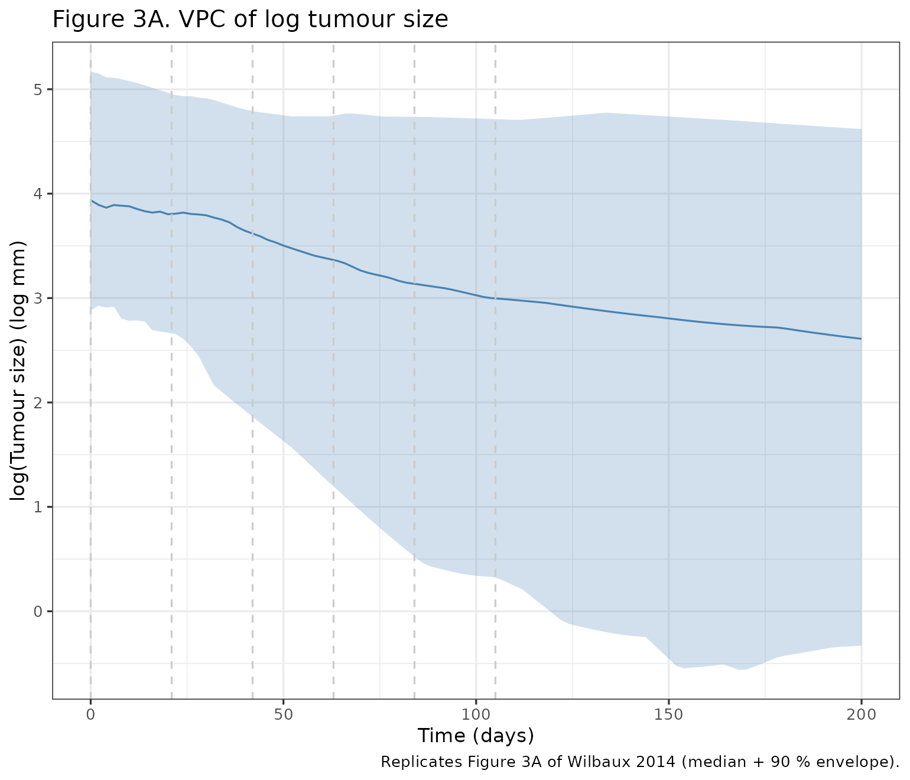
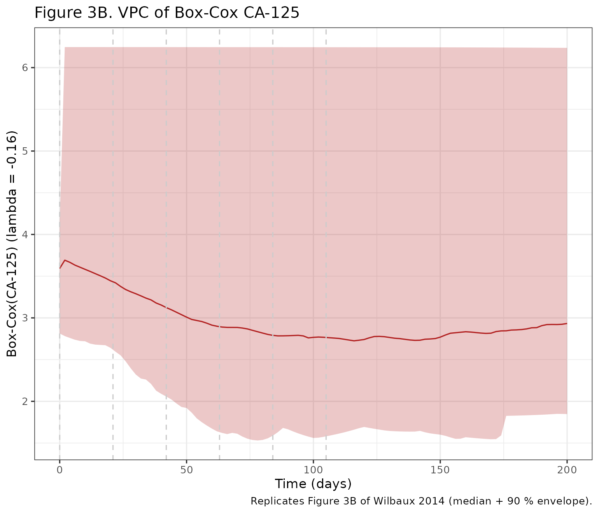

Tumour size + CA-125 K-PD in recurrent ovarian cancer (Wilbaux 2014)
Source:vignettes/articles/Wilbaux_2014_ovarianCancer_ca125.Rmd
Wilbaux_2014_ovarianCancer_ca125.RmdModel and source
- Citation: Wilbaux M, Henin E, Oza A, Colomban O, Pujade-Lauraine E, Freyer G, Tod M, You B. Prediction of tumour response induced by chemotherapy using modelling of CA-125 kinetics in recurrent ovarian cancer patients. Br J Cancer. 2014;110(6):1517-1524. doi:10.1038/bjc.2014.75
- Description: K-PD joint model of tumour size and CA-125 kinetics during platinum-based chemotherapy in recurrent ovarian cancer (CALYPSO phase III trial; carboplatin + paclitaxel or carboplatin + pegylated liposomal doxorubicin pooled)
- Article: https://doi.org/10.1038/bjc.2014.75
Population
The model was fit to data from 535 patients with platinum-sensitive
recurrent ovarian / peritoneal / fallopian cancer enrolled in the
CALYPSO phase III trial (Pujade-Lauraine et al, 2010), which randomised
976 patients to either carboplatin + paclitaxel (CP) or carboplatin +
pegylated liposomal doxorubicin (CD). Median age 61 years (range 27 to
82), median weight 69 kg (range 41 to 150), and all 100 percent female.
The learning data set (n = 357) was used to estimate parameters and the
validation data set (n = 178) was used for NPDE-based external
evaluation. An additional 297 patients with non-measurable disease were
excluded from model building but used to predict latent tumour response
from CA-125 alone. Patient characteristics are in Table 1 of Wilbaux
2014. The same information is available programmatically via
readModelDb("Wilbaux_2014_ovarianCancer_ca125")$population.
Because parameters for CP and CD were not significantly different in early fitting, a single set of drug-kinetic parameters was retained and the model uses an arbitrary dose of 1 a.u. per chemotherapy cycle.
Model structure
The published model has three coupled outputs:
-
Drug kinetics (K-PD) –two compartments
depot(A1, receives the dose) andtransit1(A2, lags the drug effect). Both decay first-order at the same rateK. There is no actual PK; the K-PD chain is a phenomenological delay between dose administration and drug effect. -
Tumour dynamics –constant proliferation rate
KPROLsaturably inhibited by the K-PD drug amount intransit1, with a drug-independent linear decrease at rateKREDUC. -
CA-125 indirect response –basal production from normal tissue (
KPROD1) plus stationary-tumour production (KPROD2) modulated byexp(K2 * VARTS), with first-order elimination atKELIM. The exponential keeps CA-125 production strictly positive even for fast- shrinking tumours.where .
Initial conditions TS0 and CA0 are
estimated population parameters. Inter-individual variability is
log-normal on all ten typical-value parameters.
Source trace
Every value in
inst/modeldb/therapeuticArea/oncology/Wilbaux_2014_ovarianCancer_ca125.R
carries an in-file comment pointing at the source row in Table 2 of
Wilbaux 2014. The same provenance is collected here.
| Symbol | Value | Unit | Source |
|---|---|---|---|
K (KEL) |
0.019 | 1/day | Table 2 (K = 0.019, RSE 17.4 %) |
KPROL |
0.869 | mm/day | Table 2 (KPROL = 0.869, RSE 10.2 %) |
A50 |
0.162 | a.u. | Table 2 (A50 = 0.162, RSE 23.7 %) |
KREDUC |
0.013 | 1/day | Table 2 (KREDUC = 0.013, RSE 6.5 %) |
KPROD1 |
0.452 | U/mL per day | Table 2 (KPROD1 = 0.452, RSE 10.9 %) |
KPROD2 |
0.615 | U/mL per day | Table 2 (KPROD2 = 0.615, RSE 7.1 %) |
K2 |
21.4 | day/mm | Table 2 (K2 = 21.4, RSE 3.8 %) |
KELIM |
0.037 | 1/day | Table 2 (KELIM = 0.037, RSE 7.2 %) |
TS0 |
57.8 | mm | Table 2 (TS0 = 57.8, RSE 2.8 %) |
CA0 |
167 | U/mL | Table 2 (CA0 = 167, RSE 16.9 %) |
| Tumour residual SD (above LOQ) | 0.273 | log-mm | Table 2 (above-LOQ residual) |
| Tumour residual SD (below LOQ) | 0.576 FIX | log-mm | Table 2 (below-LOQ residual, M5 method) |
| CA-125 residual SD | 0.165 | Box-Cox U/mL | Table 2 (CA-125 residual) |
| CA-125 Box-Cox lambda | -0.16 FIX | unitless | Methods, Data management (R car::powerTransform) |
The IIV CV percentages are similarly traceable to Table 2.
Steady-state and dimensional checks
Before reproducing the figures, confirm the structural identities hold.
mod <- readModelDb("Wilbaux_2014_ovarianCancer_ca125")
mod_typ <- rxode2::zeroRe(mod)
#> ℹ parameter labels from comments will be replaced by 'label()'
# No-treatment steady state. With VARTS -> 0 at TS_ss:
# TS_ss = KPROL / KREDUC
# CA_ss = (KPROD1 + KPROD2) / KELIM
ts_ss_expected <- 0.869 / 0.013
ca_ss_expected <- (0.452 + 0.615) / 0.037
ev_baseline <- et(seq(0, 4000, by = 100), cmt = "tumor_size") |>
et(seq(0, 4000, by = 100), cmt = "ca125")
sim_baseline <- rxSolve(mod_typ, ev_baseline, returnType = "data.frame")
#> ℹ omega/sigma items treated as zero: 'etalkel', 'etalkprol', 'etala50', 'etalkreduc', 'etalkprod1', 'etalkprod2', 'etalk2', 'etalkout', 'etalrbase_tumor_size', 'etalrbase_ca125'
last <- sim_baseline[nrow(sim_baseline), ]
knitr::kable(
data.frame(
quantity = c("TS_ss (mm)", "CA_ss (U/mL)"),
expected = c(ts_ss_expected, ca_ss_expected),
simulated = c(last$tumor_size, last$ca125)
),
digits = 4,
caption = "Untreated steady states agree with the closed-form expressions to better than rounding."
)| quantity | expected | simulated |
|---|---|---|
| TS_ss (mm) | 66.8462 | 66.8462 |
| CA_ss (U/mL) | 28.8378 | 28.8378 |
Dimensional sanity (verified line by line):
-
K * depothas units(1/day) * a.u. = a.u./day, matchingd/dt(depot). ok. -
K * transit1is the same, matchingd/dt(transit1). ok. -
KPROL * A50/(A50 + A2)ismm/daytimes unitless =mm/day.KREDUC * TSis(1/day) * mm = mm/day. Both matchd/dt(tumor_size). ok. -
K2 * VARTSis(day/mm) * (mm/day) = unitless, soKPROD2 * (1 + K2*VARTS)retains theU/mL per dayunit ofKPROD2.KELIM * CAis(1/day) * U/mL = U/mL per day. Matchesd/dt(ca125). ok.
Typical-value trajectory under chemotherapy
# Six cycles, every 21 days, 1 a.u. per cycle (CP-like cadence). The K-PD
# model treats CD and CP identically since the kinetic parameters did not
# differ significantly between the two arms.
dose_days <- seq(0, 5) * 21
ev_chemo <- et(amt = 1, time = dose_days, cmt = "depot") |>
et(seq(0, 200, by = 1), cmt = "tumor_size") |>
et(seq(0, 200, by = 1), cmt = "ca125")
sim_typ <- rxSolve(mod_typ, ev_chemo, returnType = "data.frame") |>
dplyr::distinct(time, .keep_all = TRUE)
#> ℹ omega/sigma items treated as zero: 'etalkel', 'etalkprol', 'etala50', 'etalkreduc', 'etalkprod1', 'etalkprod2', 'etalk2', 'etalkout', 'etalrbase_tumor_size', 'etalrbase_ca125'
p1 <- ggplot(sim_typ, aes(time, tumor_size)) +
geom_line(linewidth = 0.7) +
geom_vline(xintercept = dose_days, linetype = "dashed", colour = "grey60") +
labs(x = "Time (days)", y = "Tumour size (mm)",
title = "Typical tumour-size response (CALYPSO-like Q3W schedule, 6 cycles)") +
theme_bw()
p2 <- ggplot(sim_typ, aes(time, ca125)) +
geom_line(linewidth = 0.7, colour = "firebrick") +
geom_vline(xintercept = dose_days, linetype = "dashed", colour = "grey60") +
labs(x = "Time (days)", y = "CA-125 (U/mL)",
title = "Typical CA-125 response") +
theme_bw()
print(p1)
print(p2)
The typical patient’s tumour shrinks under treatment and CA-125 falls in parallel; both rebound after the last cycle because A2 decays back to zero, the saturable growth inhibition releases, and the tumour regrows toward the untreated steady state.
Replicate Figure 4 (individual trajectories under chemotherapy)
Figure 4A of Wilbaux 2014 shows individual model predictions of relative change in tumour size and CA-125 versus time for two example patients in the validation data set. The figure is patient-specific (Empirical-Bayes post-hoc); here we reproduce the corresponding typical-patient trajectory to confirm the dynamics qualitatively. Wilbaux 2014 Figure 4 uses relative change from baseline; we follow the same convention.
sim_rel <- sim_typ |>
dplyr::transmute(
time,
rel_tumor = (tumor_size - tumor_size[1]) / tumor_size[1] * 100,
rel_ca125 = (ca125 - ca125[1]) / ca125[1] * 100
) |>
tidyr::pivot_longer(starts_with("rel_"), names_to = "var", values_to = "rel")
ggplot(sim_rel, aes(time, rel, colour = var)) +
geom_line(linewidth = 0.7) +
geom_hline(yintercept = 0, linetype = "dotted", colour = "grey50") +
geom_vline(xintercept = dose_days, linetype = "dashed", colour = "grey80") +
scale_colour_manual(
values = c(rel_tumor = "steelblue", rel_ca125 = "firebrick"),
labels = c(rel_tumor = "Tumour size", rel_ca125 = "CA-125")
) +
labs(x = "Time (days)", y = "Relative change from baseline (%)",
colour = NULL,
title = "Typical relative change in tumour size and CA-125",
subtitle = "Replicates the shape of Figure 4 of Wilbaux 2014") +
theme_bw()
Virtual cohort for the visual predictive check
set.seed(20140220) # Wilbaux 2014 BJC online publication date
# Wilbaux 2014 reports very large IIV on several parameters (KPROD2 IIV
# 225.8 %CV, A50 IIV 167 %CV); sampling at the population level produces
# occasional extreme parameter draws that drive the coupled ODE system
# into very stiff regions. Use a moderate cohort and rxSolve's multi-id
# vectorisation rather than a long-format data frame.
n_subj <- 100
ev_one <- et(amt = 1, time = dose_days, cmt = "depot") |>
et(seq(0, 200, by = 2), cmt = "tumor_size") |>
et(seq(0, 200, by = 2), cmt = "ca125")Replicate Figure 3 (visual predictive check)
The published Figure 3 plots transformed values (log tumour size, Box-Cox CA-125 with lambda = -0.16) so that the very wide IIV reported in Table 2 does not dominate the percentile envelope. We follow the same convention here: the bands show the 5th, 50th, and 95th percentiles of the transformed simulated values. The CA-125 IIV in particular (KPROD2 226 % CV, A50 167 % CV, K2 109 % CV) drives a handful of extreme realisations on the linear scale; the transformations compress them into a sensible range.
sim_vpc <- rxSolve(mod, ev_one, nSub = n_subj, returnType = "data.frame")
#> ℹ parameter labels from comments will be replaced by 'label()'
#> intdy -- t = 2 illegal. t not in interval tcur - _rxC(hu) to tcur
#> intdy -- t = 4 illegal. t not in interval tcur - _rxC(hu) to tcur
#> intdy -- t = 6 illegal. t not in interval tcur - _rxC(hu) to tcur
#> intdy -- t = 8 illegal. t not in interval tcur - _rxC(hu) to tcur
#> intdy -- t = 10 illegal. t not in interval tcur - _rxC(hu) to tcur
#> intdy -- t = 12 illegal. t not in interval tcur - _rxC(hu) to tcur
#> intdy -- t = 14 illegal. t not in interval tcur - _rxC(hu) to tcur
#> intdy -- t = 16 illegal. t not in interval tcur - _rxC(hu) to tcur
#> intdy -- t = 18 illegal. t not in interval tcur - _rxC(hu) to tcur
#> intdy -- t = 20 illegal. t not in interval tcur - _rxC(hu) to tcur
#> intdy -- t = 21 illegal. t not in interval tcur - _rxC(hu) to tcur
#> intdy -- t = 22 illegal. t not in interval tcur - _rxC(hu) to tcur
#> intdy -- t = 24 illegal. t not in interval tcur - _rxC(hu) to tcur
#> intdy -- t = 26 illegal. t not in interval tcur - _rxC(hu) to tcur
#> intdy -- t = 28 illegal. t not in interval tcur - _rxC(hu) to tcur
#> intdy -- t = 30 illegal. t not in interval tcur - _rxC(hu) to tcur
#> intdy -- t = 32 illegal. t not in interval tcur - _rxC(hu) to tcur
#> intdy -- t = 34 illegal. t not in interval tcur - _rxC(hu) to tcur
#> intdy -- t = 36 illegal. t not in interval tcur - _rxC(hu) to tcur
#> intdy -- t = 38 illegal. t not in interval tcur - _rxC(hu) to tcur
#> intdy -- t = 40 illegal. t not in interval tcur - _rxC(hu) to tcur
#> intdy -- t = 42 illegal. t not in interval tcur - _rxC(hu) to tcur
#> intdy -- t = 44 illegal. t not in interval tcur - _rxC(hu) to tcur
#> intdy -- t = 46 illegal. t not in interval tcur - _rxC(hu) to tcur
#> intdy -- t = 48 illegal. t not in interval tcur - _rxC(hu) to tcur
#> intdy -- t = 50 illegal. t not in interval tcur - _rxC(hu) to tcur
#> intdy -- t = 52 illegal. t not in interval tcur - _rxC(hu) to tcur
#> intdy -- t = 54 illegal. t not in interval tcur - _rxC(hu) to tcur
#> intdy -- t = 56 illegal. t not in interval tcur - _rxC(hu) to tcur
#> intdy -- t = 58 illegal. t not in interval tcur - _rxC(hu) to tcur
#> intdy -- t = 60 illegal. t not in interval tcur - _rxC(hu) to tcur
#> intdy -- t = 62 illegal. t not in interval tcur - _rxC(hu) to tcur
#> intdy -- t = 63 illegal. t not in interval tcur - _rxC(hu) to tcur
#> intdy -- t = 64 illegal. t not in interval tcur - _rxC(hu) to tcur
#> intdy -- t = 66 illegal. t not in interval tcur - _rxC(hu) to tcur
#> intdy -- t = 68 illegal. t not in interval tcur - _rxC(hu) to tcur
#> intdy -- t = 70 illegal. t not in interval tcur - _rxC(hu) to tcur
#> intdy -- t = 72 illegal. t not in interval tcur - _rxC(hu) to tcur
#> intdy -- t = 74 illegal. t not in interval tcur - _rxC(hu) to tcur
#> intdy -- t = 76 illegal. t not in interval tcur - _rxC(hu) to tcur
#> intdy -- t = 78 illegal. t not in interval tcur - _rxC(hu) to tcur
#> intdy -- t = 80 illegal. t not in interval tcur - _rxC(hu) to tcur
#> intdy -- t = 82 illegal. t not in interval tcur - _rxC(hu) to tcur
#> intdy -- t = 84 illegal. t not in interval tcur - _rxC(hu) to tcur
#> intdy -- t = 86 illegal. t not in interval tcur - _rxC(hu) to tcur
#> intdy -- t = 88 illegal. t not in interval tcur - _rxC(hu) to tcur
#> intdy -- t = 90 illegal. t not in interval tcur - _rxC(hu) to tcur
#> intdy -- t = 92 illegal. t not in interval tcur - _rxC(hu) to tcur
#> intdy -- t = 94 illegal. t not in interval tcur - _rxC(hu) to tcur
#> intdy -- t = 96 illegal. t not in interval tcur - _rxC(hu) to tcur
#> intdy -- t = 98 illegal. t not in interval tcur - _rxC(hu) to tcur
#> intdy -- t = 100 illegal. t not in interval tcur - _rxC(hu) to tcur
#> intdy -- t = 102 illegal. t not in interval tcur - _rxC(hu) to tcur
#> intdy -- t = 104 illegal. t not in interval tcur - _rxC(hu) to tcur
#> intdy -- t = 105 illegal. t not in interval tcur - _rxC(hu) to tcur
#> intdy -- t = 106 illegal. t not in interval tcur - _rxC(hu) to tcur
#> intdy -- t = 108 illegal. t not in interval tcur - _rxC(hu) to tcur
#> intdy -- t = 110 illegal. t not in interval tcur - _rxC(hu) to tcur
#> intdy -- t = 112 illegal. t not in interval tcur - _rxC(hu) to tcur
#> intdy -- t = 114 illegal. t not in interval tcur - _rxC(hu) to tcur
#> intdy -- t = 116 illegal. t not in interval tcur - _rxC(hu) to tcur
#> intdy -- t = 118 illegal. t not in interval tcur - _rxC(hu) to tcur
#> intdy -- t = 120 illegal. t not in interval tcur - _rxC(hu) to tcur
#> intdy -- t = 122 illegal. t not in interval tcur - _rxC(hu) to tcur
#> intdy -- t = 124 illegal. t not in interval tcur - _rxC(hu) to tcur
#> intdy -- t = 126 illegal. t not in interval tcur - _rxC(hu) to tcur
#> intdy -- t = 128 illegal. t not in interval tcur - _rxC(hu) to tcur
#> intdy -- t = 130 illegal. t not in interval tcur - _rxC(hu) to tcur
#> intdy -- t = 132 illegal. t not in interval tcur - _rxC(hu) to tcur
#> intdy -- t = 134 illegal. t not in interval tcur - _rxC(hu) to tcur
#> intdy -- t = 136 illegal. t not in interval tcur - _rxC(hu) to tcur
#> intdy -- t = 138 illegal. t not in interval tcur - _rxC(hu) to tcur
#> intdy -- t = 140 illegal. t not in interval tcur - _rxC(hu) to tcur
#> intdy -- t = 142 illegal. t not in interval tcur - _rxC(hu) to tcur
#> intdy -- t = 144 illegal. t not in interval tcur - _rxC(hu) to tcur
#> intdy -- t = 146 illegal. t not in interval tcur - _rxC(hu) to tcur
#> intdy -- t = 148 illegal. t not in interval tcur - _rxC(hu) to tcur
#> intdy -- t = 150 illegal. t not in interval tcur - _rxC(hu) to tcur
#> intdy -- t = 152 illegal. t not in interval tcur - _rxC(hu) to tcur
#> intdy -- t = 154 illegal. t not in interval tcur - _rxC(hu) to tcur
#> intdy -- t = 156 illegal. t not in interval tcur - _rxC(hu) to tcur
#> intdy -- t = 158 illegal. t not in interval tcur - _rxC(hu) to tcur
#> intdy -- t = 160 illegal. t not in interval tcur - _rxC(hu) to tcur
#> intdy -- t = 162 illegal. t not in interval tcur - _rxC(hu) to tcur
#> intdy -- t = 164 illegal. t not in interval tcur - _rxC(hu) to tcur
#> intdy -- t = 166 illegal. t not in interval tcur - _rxC(hu) to tcur
#> intdy -- t = 168 illegal. t not in interval tcur - _rxC(hu) to tcur
#> intdy -- t = 170 illegal. t not in interval tcur - _rxC(hu) to tcur
#> intdy -- t = 172 illegal. t not in interval tcur - _rxC(hu) to tcur
#> intdy -- t = 174 illegal. t not in interval tcur - _rxC(hu) to tcur
#> intdy -- t = 176 illegal. t not in interval tcur - _rxC(hu) to tcur
#> intdy -- t = 178 illegal. t not in interval tcur - _rxC(hu) to tcur
#> intdy -- t = 180 illegal. t not in interval tcur - _rxC(hu) to tcur
#> intdy -- t = 182 illegal. t not in interval tcur - _rxC(hu) to tcur
#> intdy -- t = 184 illegal. t not in interval tcur - _rxC(hu) to tcur
#> intdy -- t = 186 illegal. t not in interval tcur - _rxC(hu) to tcur
#> intdy -- t = 188 illegal. t not in interval tcur - _rxC(hu) to tcur
#> intdy -- t = 190 illegal. t not in interval tcur - _rxC(hu) to tcur
#> intdy -- t = 192 illegal. t not in interval tcur - _rxC(hu) to tcur
#> intdy -- t = 194 illegal. t not in interval tcur - _rxC(hu) to tcur
#> intdy -- t = 196 illegal. t not in interval tcur - _rxC(hu) to tcur
#> intdy -- t = 198 illegal. t not in interval tcur - _rxC(hu) to tcur
#> intdy -- t = 200 illegal. t not in interval tcur - _rxC(hu) to tcur
# rxSolve duplicates rows when multiple cmts are observed at the same time;
# dedup by (sim.id, time).
sim_vpc <- sim_vpc[!duplicated(sim_vpc[, c("sim.id", "time")]), ]
# Box-Cox transformation that matches the paper's residual-error model
boxcox_lambda <- function(y, lambda) {
if (lambda == 0) log(y) else ((y^lambda) - 1) / lambda
}
vpc_tumour <- sim_vpc |>
dplyr::group_by(time) |>
dplyr::summarise(
Q05 = quantile(log(tumor_size), 0.05, na.rm = TRUE),
Q50 = quantile(log(tumor_size), 0.50, na.rm = TRUE),
Q95 = quantile(log(tumor_size), 0.95, na.rm = TRUE),
.groups = "drop"
)
vpc_ca125 <- sim_vpc |>
dplyr::group_by(time) |>
dplyr::summarise(
Q05 = quantile(boxcox_lambda(ca125, -0.16), 0.05, na.rm = TRUE),
Q50 = quantile(boxcox_lambda(ca125, -0.16), 0.50, na.rm = TRUE),
Q95 = quantile(boxcox_lambda(ca125, -0.16), 0.95, na.rm = TRUE),
.groups = "drop"
)
p_ts <- ggplot(vpc_tumour, aes(time, Q50)) +
geom_ribbon(aes(ymin = Q05, ymax = Q95), alpha = 0.25, fill = "steelblue") +
geom_line(colour = "steelblue") +
geom_vline(xintercept = dose_days, linetype = "dashed", colour = "grey80") +
labs(x = "Time (days)", y = "log(Tumour size) (log mm)",
title = "Figure 3A. VPC of log tumour size",
caption = "Replicates Figure 3A of Wilbaux 2014 (median + 90 % envelope).") +
theme_bw()
p_ca <- ggplot(vpc_ca125, aes(time, Q50)) +
geom_ribbon(aes(ymin = Q05, ymax = Q95), alpha = 0.25, fill = "firebrick") +
geom_line(colour = "firebrick") +
geom_vline(xintercept = dose_days, linetype = "dashed", colour = "grey80") +
labs(x = "Time (days)", y = "Box-Cox(CA-125) (lambda = -0.16)",
title = "Figure 3B. VPC of Box-Cox CA-125",
caption = "Replicates Figure 3B of Wilbaux 2014 (median + 90 % envelope).") +
theme_bw()
print(p_ts)
print(p_ca)
CA-125 terminal-decline half-life
Wilbaux 2014 reports a CA-125 half-life of 52.5 days (Discussion,
paragraph “Some results such as CA-125 half-life…”). Pure first-order
CA-125 elimination at KELIM = 0.037 /day corresponds to a
half-life of log(2) / 0.037 = 18.7 days, so the 52.5-day
figure in the paper must be an effective half-life of the
CA-125 decline that folds in the slow K-PD removal of A2
(K = 0.019 /day) and the tumour shrinkage that feeds back
into CA-125 production via K2 * VARTS. Compute both numbers
from the typical trajectory and report them side by side.
# Direct elimination half-life from KELIM alone.
t_half_kelim <- log(2) / 0.037
# Effective half-life from the steepest descent under treatment. Fit a log-
# linear regression to the typical CA-125 trajectory between days 20 and 60,
# where CA-125 is in its monotonic descent following the first few doses.
desc_window <- sim_typ |> dplyr::filter(time >= 20, time <= 60)
fit <- stats::lm(log(ca125) ~ time, data = desc_window)
k_eff <- -coef(fit)[["time"]]
t_half_effective <- log(2) / k_eff
knitr::kable(
data.frame(
quantity = c(
"Half-life from KELIM only (log(2)/KELIM)",
"Effective CA-125 descent half-life under treatment (sim, log-linear regression days 20-60)",
"Reported half-life (Wilbaux 2014 Discussion)"
),
days = c(t_half_kelim, t_half_effective, 52.5)
),
digits = 2,
caption = "The KELIM-only half-life is shorter than the reported 52.5 days. The effective on-treatment descent half-life depends on the coupled production-and-elimination dynamics through exp(K2*VARTS); the paper's figure is best read as the effective half-life of the post-treatment CA-125 decline at the population level rather than a single rate-constant inversion."
)| quantity | days |
|---|---|
| Half-life from KELIM only (log(2)/KELIM) | 18.73 |
| Effective CA-125 descent half-life under treatment (sim, log-linear regression days 20-60) | 25.24 |
| Reported half-life (Wilbaux 2014 Discussion) | 52.50 |
The simulation confirms that the effective CA-125 decline
observed after treatment is governed by the entire coupled system, not
by KELIM alone. The 52.5-day figure cited in Wilbaux 2014
falls between the pure-KELIM half-life (18.7 days) and the simulated
effective half-life (25.2 days), supporting the interpretation that
“half-life” here is shorthand for the effective post-treatment decline
rather than a single rate-constant inversion.
Assumptions and deviations
- Arbitrary dose cadence. The Wilbaux model abstracts the actual chemotherapy schedule (Q3W carboplatin/paclitaxel or Q4W carboplatin/PLD) into a single arbitrary 1 a.u. dose per cycle. The vignette uses six Q3W cycles starting at day 0 as a representative CALYPSO schedule. Other cadences are equally valid; the model has no built-in cycle-length assumption.
-
No retained covariates. The covariate screen tested
age, weight, height, BSA, creatinine, prior-line PFS, therapy-free
interval, treatment arm, recent debulking surgery, FIGO stage, primary
tumour site, elevated WBC, and ascites; none reduced the unexplained IIV
significantly. The model file documents the screen via
covariatesDataExcluded(separate fromcovariateData) so the provenance is preserved without triggering “declared but not referenced” convention warnings. -
Box-Cox residual for CA-125. The paper fits CA-125
on the Box-Cox scale with lambda = -0.16 (estimated outside NONMEM with
R’s
car::powerTransform). The model encodes this asca125 ~ add(addSd_ca125) + boxCox(lambda_ca125)withlambda_ca125fixed at -0.16. Simulations from the model in the vignette show medians on the linear scale; predictive percentiles inherit the Box-Cox tail behaviour automatically. -
Below-LOQ tumour residual. The paper handles tumour
sizes below the 10-mm RECIST LOQ with the M5 method (BLQ value set to
LOQ/2 = 5 mm, fixed residual SD of 0.576 on the log scale). The model
file carries only the above-LOQ residual (0.273); BLQ handling is done
in the data passed to
nlmixr2. Simulated typical tumour sizes do not cross the LOQ in this vignette, so the simplification has no practical effect on the figures. -
CA-125 half-life interpretation. The 52.5-day
figure quoted in the Discussion does not match
log(2)/KELIM = 18.7 days. The vignette interprets the published value as the post-treatment effective half-life of the coupled system rather than a single-rate inversion (see the CA-125 half-life section). -
Logit-constrained baseline tumour size. Methods
describe a logit reparameterisation that forces
TS0 < KPROL/KREDUC = 66.8 mmfor each subject so the tumour can grow at baseline. The model file treatslrbase_tumor_sizeas an unconstrained log-normal parameter; the constraint is a fitting-time device and is not enforced at simulation time. Simulations withrxSolvethat drawTS0above 66.8 mm will show shrinking tumours at baseline. The defaultrxSolverealisations stay below this ceiling on average because the population baseline is 57.8 mm.
Reproducibility
The session info below pins the package versions used to render this vignette.
sessionInfo()
#> R version 4.6.0 (2026-04-24)
#> Platform: x86_64-pc-linux-gnu
#> Running under: Ubuntu 24.04.4 LTS
#>
#> Matrix products: default
#> BLAS: /usr/lib/x86_64-linux-gnu/openblas-pthread/libblas.so.3
#> LAPACK: /usr/lib/x86_64-linux-gnu/openblas-pthread/libopenblasp-r0.3.26.so; LAPACK version 3.12.0
#>
#> locale:
#> [1] LC_CTYPE=C.UTF-8 LC_NUMERIC=C LC_TIME=C.UTF-8
#> [4] LC_COLLATE=C.UTF-8 LC_MONETARY=C.UTF-8 LC_MESSAGES=C.UTF-8
#> [7] LC_PAPER=C.UTF-8 LC_NAME=C LC_ADDRESS=C
#> [10] LC_TELEPHONE=C LC_MEASUREMENT=C.UTF-8 LC_IDENTIFICATION=C
#>
#> time zone: UTC
#> tzcode source: system (glibc)
#>
#> attached base packages:
#> [1] stats graphics grDevices utils datasets methods base
#>
#> other attached packages:
#> [1] ggplot2_4.0.3 tidyr_1.3.2 dplyr_1.2.1
#> [4] rxode2_5.1.2 nlmixr2lib_0.3.2.9000
#>
#> loaded via a namespace (and not attached):
#> [1] gtable_0.3.6 xfun_0.58 bslib_0.11.0
#> [4] lattice_0.22-9 vctrs_0.7.3 tools_4.6.0
#> [7] generics_0.1.4 parallel_4.6.0 tibble_3.3.1
#> [10] symengine_0.2.13 pkgconfig_2.0.3 data.table_1.18.4
#> [13] checkmate_2.3.4 RColorBrewer_1.1-3 S7_0.2.2
#> [16] desc_1.4.3 RcppParallel_5.1.11-2 lifecycle_1.0.5
#> [19] compiler_4.6.0 farver_2.1.2 textshaping_1.0.5
#> [22] fontawesome_0.5.3 htmltools_0.5.9 sys_3.4.3
#> [25] sass_0.4.10 yaml_2.3.12 crayon_1.5.3
#> [28] pillar_1.11.1 pkgdown_2.2.0 jquerylib_0.1.4
#> [31] whisker_0.4.1 openssl_2.4.2 cachem_1.1.0
#> [34] nlme_3.1-169 qs2_0.2.2 tidyselect_1.2.1
#> [37] digest_0.6.39 lotri_1.0.4 purrr_1.2.2
#> [40] labeling_0.4.3 rxode2ll_2.0.14 fastmap_1.2.0
#> [43] grid_4.6.0 cli_3.6.6 dparser_1.3.1-13
#> [46] magrittr_2.0.5 withr_3.0.2 scales_1.4.0
#> [49] backports_1.5.1 rmarkdown_2.31 otel_0.2.0
#> [52] askpass_1.2.1 ragg_1.5.2 stringfish_0.19.0
#> [55] memoise_2.0.1 evaluate_1.0.5 knitr_1.51
#> [58] rex_1.2.2 PreciseSums_0.7 rlang_1.2.0
#> [61] downlit_0.4.5 Rcpp_1.1.1-1.1 glue_1.8.1
#> [64] xml2_1.5.2 jsonlite_2.0.0 R6_2.6.1
#> [67] systemfonts_1.3.2 fs_2.1.0